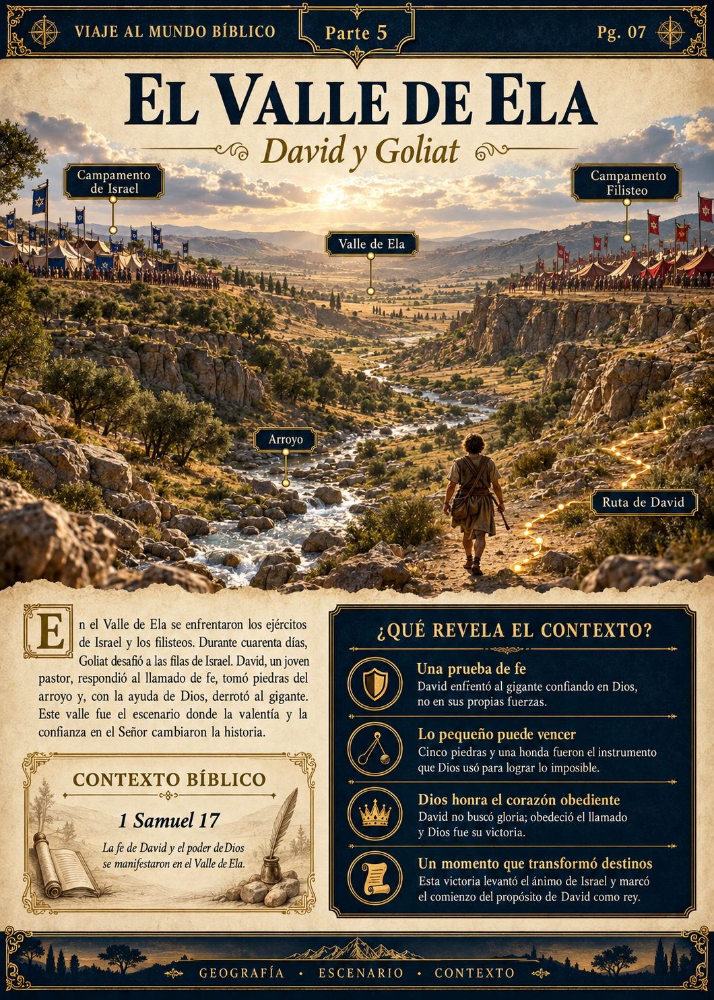
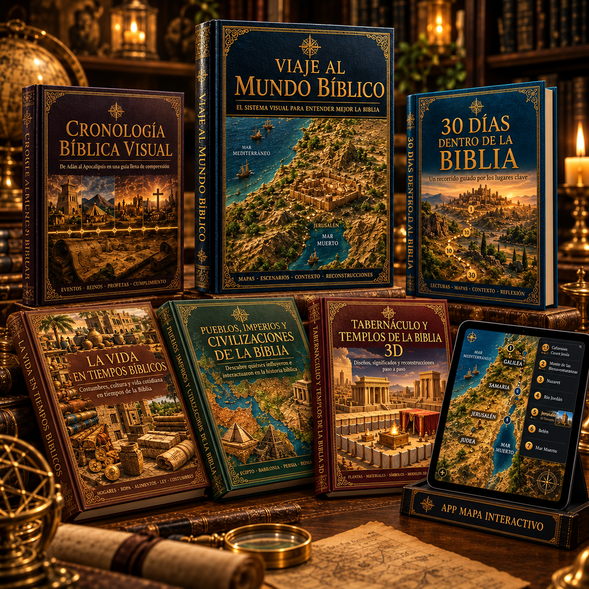
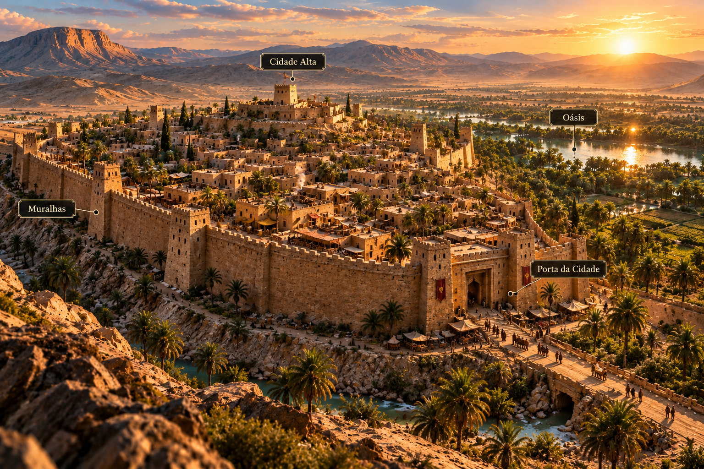
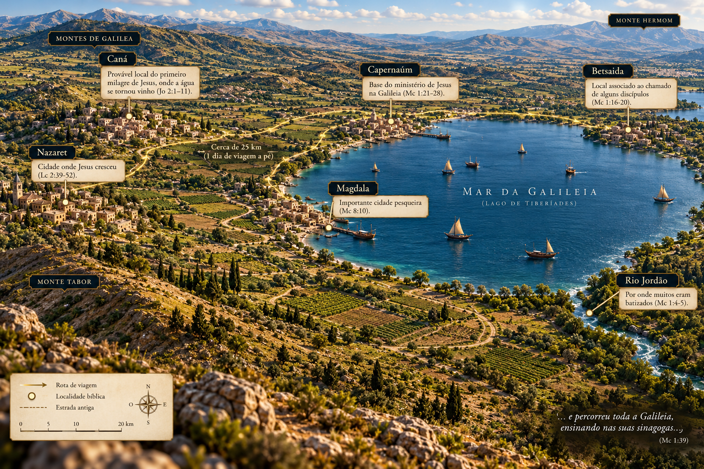
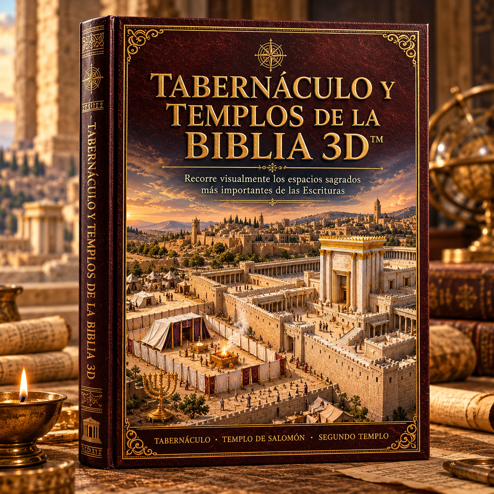
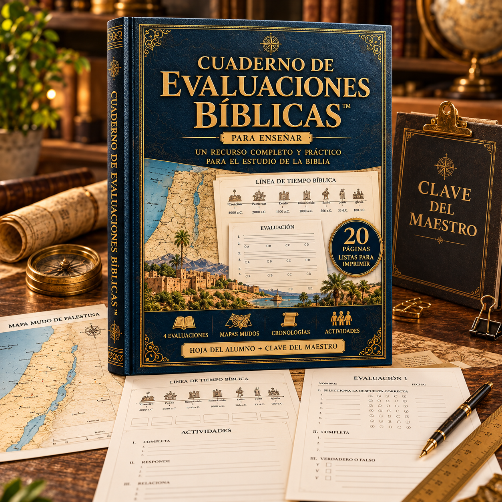

PG. 07

El valle donde se enfrentaron David y Goliat
Elá y su entorno · Sección 5
📖 VIAJE AL MUNDO BÍBLICO 3D — COLECCIÓN DE ESTUDIO VISUAL
Una biblioteca visual de siete volúmenes para descubrir el lugar de cada acontecimiento, su época,
los protagonistas del relato y la forma en que vivían sus comunidades.
Conecta mapas, recorridos y reconstrucciones sin saltar de un recurso a otro.
Profundiza en tu lectura y comparte lo aprendido con imágenes que lo explican.

🛡️ Devolución durante 15 días · 🔒 Compra segura · 📧 Entrega digital
DESCUBRE EL MATERIAL
Tu biblioteca reúne más de cien mapas y recreaciones en nueve secciones que suman más de trescientas páginas para explorar, desde los primeros relatos hasta la expansión apostólica.
Cuando un pasaje menciona el camino entre Jericó y Jerusalén, la distancia y el relieve también forman parte de la historia.
Galilea, Samaria y Judea dejan de ser nombres sueltos cuando puedes observar sus fronteras y conexiones.
El encuentro de David con Goliat adquiere otra dimensión al contemplar el terreno del valle de Elá.
Los detalles del Tabernáculo y del Templo resultan más claros cuando puedes reconocer sus espacios.
Comprender qué lugar ocuparon asirios, persas, filisteos y babilonios ayuda a seguir el hilo de los acontecimientos.
Al compartir un estudio, una imagen del escenario puede resolver las dudas que una explicación extensa deja abiertas.
Tu lectura ya tiene una base.
Las imágenes te ayudan a completar el contexto.
Cuatro recursos complementarios reúnen la información que necesitas para conectar cada pasaje con su entorno.
Identifica ciudades, regiones y caminos dentro del paisaje de cada relato.

Acércate al aspecto de templos, asentamientos y construcciones antiguas.

Relaciona las etapas de un viaje con sus distancias y destinos.
Consulta las láminas, prepara una explicación o compártelas con tu grupo.
EXPLORA EL MAPA Y ACÉRCATE A LA ESCENA
Elige un episodio, consulta su ubicación y reproduce la escena junto a la referencia del pasaje.
UNA IMAGEN QUE CONECTA LOS DETALLES
Relaciona los nombres del texto con sus ubicaciones y comprende cómo se conectan.
Sigue las etapas de los viajes y observa las regiones que atraviesan.
Utiliza las recreaciones para orientarte entre ciudades, santuarios y otros escenarios.
Reúne personas, lugares y fechas dentro de un mismo marco visual.
Muestra el contexto mientras desarrollas el estudio ante tu familia o grupo.
Ten a mano cartografía, recorridos y reconstrucciones para acompañar cada lectura.
TU BIBLIOTECA POR DENTRO
Los primeros escenarios
Un acercamiento visual al Edén, el Diluvio, Babel y los comienzos del relato bíblico.
La época de los patriarcas
Las tierras y desplazamientos de Abraham, Isaac, Jacob y José.
Del Nilo al desierto
El recorrido del pueblo por Egipto, el mar Rojo y el Sinaí rumbo a Canaán.
La llegada a Canaán
El contexto de Josué, las tierras de las tribus y los acontecimientos del periodo de los jueces.
Israel y sus reyes
Los escenarios de Saúl, David y Salomón, junto al desarrollo de Jerusalén y la separación del reino.
Entre el exilio y la restauración
La influencia de Asiria, Babilonia y Persia y el camino de regreso a Jerusalén.
Los escenarios de los Evangelios
Los lugares de la vida de Jesús: Belén, Nazaret, Galilea, Samaria, Judea y Jerusalén.
Los comienzos de la comunidad cristiana
De Jerusalén a Antioquía: un vistazo al avance de las primeras comunidades.
La expansión apostólica
Recorre las etapas de Pablo en Asia Menor, Grecia y Roma y sitúa las comunidades vinculadas a sus viajes.
Un mapa para recorrer la historia
Busca un acontecimiento y combina su localización con una escena visual, una explicación y su cita bíblica. Un apoyo para preparar estudios, clases o mensajes con mayor contexto.
300+
páginas de consulta
100+
mapas para explorar
9
secciones temáticas
entrega digital
Para quienes desean profundizar en su lectura personal. Empieza por el relato que conoces y descubre después sus lugares y circunstancias, sin preparación especializada.
Para quienes comparten clases o mensajes. Acompaña tus explicaciones con recorridos, vistas de los edificios y ejercicios para repasar lo aprendido.
Para aprender en casa o en comunidad. Consulta los archivos PDF en tus dispositivos o muéstralos en una pantalla al estudiar en grupo.
MÁS RECURSOS EN EL MISMO ACCESO
Sitúa los episodios en una línea del tiempo que enlaza a los patriarcas con las primeras comunidades cristianas.
Descubre el entorno de egipcios, cananeos, filisteos, asirios, babilonios, persas, griegos y romanos y sus vínculos con Israel.
Explora viviendas, alimentos, trabajos, celebraciones y caminos para comprender las experiencias cotidianas detrás del texto.

Observa el Tabernáculo y los templos de Salomón, Zorobabel y Herodes. Compara patios, medidas y espacios interiores, incluido el Lugar Santísimo. Una guía visual integrada en la biblioteca, sin una compra adicional.
Organiza un mes de estudio con una secuencia sencilla: leer, localizar, observar y volver al pasaje con más contexto.

Veinte páginas imprimibles con cuatro propuestas de evaluación, que incluyen mapas para completar, líneas del tiempo y ejercicios con hojas para el alumno y soluciones para el docente. Lleva lo aprendido a la práctica con actividades que facilitan el repaso personal y la preparación de tus clases.
RECURSOS EXTRA PARA ACOMPAÑAR TUS PRIMERAS LECTURAS
Pequeños complementos para dar la bienvenida a tu nueva biblioteca. El contenido del pack se presenta junto con tu acceso. Encontrarás piezas visuales para organizar y acompañar tus momentos de estudio.
Nueve secciones de estudio, seis volúmenes extra y el explorador interactivo
Un solo pago · acceso permanente
Resumen adaptado de las opiniones de la colección original
Aunque no contaba con una base de historia o geografía, María destaca que el enfoque visual le facilitó seguir el contenido y reconocer las ubicaciones durante su lectura.
✔ Un comienzo accesibleCarlos valora la combinación de explicaciones, mapas y reconstrucciones, porque le permite relacionar las distancias con el entorno de cada episodio.
✔ Recursos que se complementanAndrea explica que las imágenes de Jerusalén y del valle de Elá le ayudaron a prestar atención a detalles que antes no asociaba con los lugares.
✔ Más atención al contextoDaniel utiliza los mapas para presentar los viajes de Pablo y recurre a las actividades para repasar con su grupo las ideas del estudio.
✔ Apoyo para compartir lo aprendidoLaura encontró en el itinerario de treinta días una orientación para comenzar y mantener la continuidad al explorar los distintos materiales.
✔ Un recorrido para avanzarJavier cuenta que la colección pasó de su estudio personal a las lecturas con sus hijos, que mostraron interés por las imágenes y los escenarios.
✔ Una propuesta para leer juntosELIGE CÓMO ESTUDIAR
Integra los mismos recursos en tu lectura diaria, en una reunión o en la preparación de una clase.
Tu próxima lectura puede empezar con una imagen más clara de su escenario.
⚡ Material digital · Más de 300 páginas, seis complementos y explorador · Devolución durante 15 días
Resuelve tus dudas
Tu acceso cuenta con un plazo de 15 días para solicitar la devolución.
📖 CONSULTAR LA OFERTA DE VIAJE AL MUNDO BÍBLICO 3D →